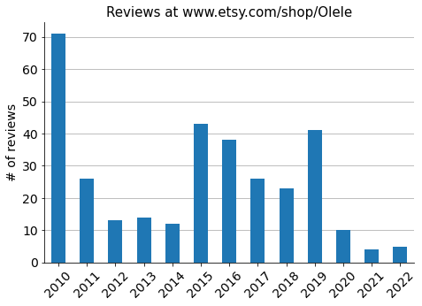
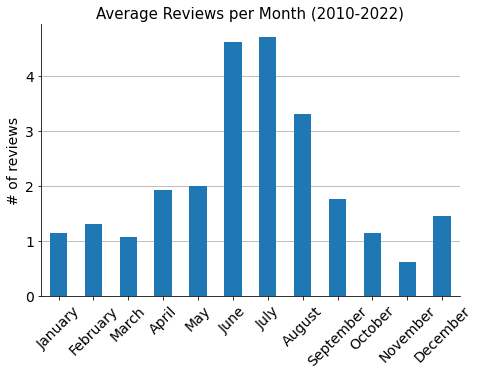
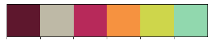
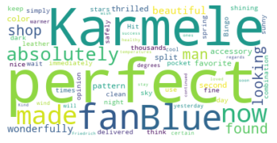

Olele - Review Analysis
Contents
Olele - Review Analysis#
https://www.etsy.com/shop/Olele
Import the data#
# Import packages
import pandas as pd
import matplotlib.pyplot as plt
import seaborn as sns
olele = pd.read_csv("olele-reviews-all.csv", usecols=["name_date", "text"])
olele
| name_date | text | |
|---|---|---|
| 0 | Carolinaon Nov 1, 2022 | As usual the quality is sturdy yet elegant and... |
| 1 | Amy Annetteon Sep 3, 2022 | I bought this fan to bring to tango and swing ... |
| 2 | Maryon Aug 31, 2022 | LOVELY! I think this is my 4th fan? Complimen... |
| 3 | Eni Aon Aug 31, 2022 | Very beautiful fan, great quality and the colo... |
| 4 | hredmondson Jun 11, 2022 | This is the second fan I've bought for myself ... |
| ... | ... | ... |
| 321 | Anonymous on Jun 18, 2010 | Gorgeous! Love it! Just in time for the summer... |
| 322 | Anonymous on Jun 15, 2010 | Really nice communication with Karmele Luqui. ... |
| 323 | Anonymous on Jun 12, 2010 | A huge WOW when I just got them! The fans are ... |
| 324 | Anonymous on Jun 12, 2010 | A huge WOW when I just got them! The fans are ... |
| 325 | Anonymous on Jun 10, 2010 | Just received this yesterday, and I am in love... |
326 rows × 2 columns
Data processing#
# Split name and date
olele[["name", "date"]] = olele["name_date"].str.split(pat="on ", expand=True)
olele
| name_date | text | name | date | |
|---|---|---|---|---|
| 0 | Carolinaon Nov 1, 2022 | As usual the quality is sturdy yet elegant and... | Carolina | Nov 1, 2022 |
| 1 | Amy Annetteon Sep 3, 2022 | I bought this fan to bring to tango and swing ... | Amy Annette | Sep 3, 2022 |
| 2 | Maryon Aug 31, 2022 | LOVELY! I think this is my 4th fan? Complimen... | Mary | Aug 31, 2022 |
| 3 | Eni Aon Aug 31, 2022 | Very beautiful fan, great quality and the colo... | Eni A | Aug 31, 2022 |
| 4 | hredmondson Jun 11, 2022 | This is the second fan I've bought for myself ... | hredmonds | Jun 11, 2022 |
| ... | ... | ... | ... | ... |
| 321 | Anonymous on Jun 18, 2010 | Gorgeous! Love it! Just in time for the summer... | Anonymous | Jun 18, 2010 |
| 322 | Anonymous on Jun 15, 2010 | Really nice communication with Karmele Luqui. ... | Anonymous | Jun 15, 2010 |
| 323 | Anonymous on Jun 12, 2010 | A huge WOW when I just got them! The fans are ... | Anonymous | Jun 12, 2010 |
| 324 | Anonymous on Jun 12, 2010 | A huge WOW when I just got them! The fans are ... | Anonymous | Jun 12, 2010 |
| 325 | Anonymous on Jun 10, 2010 | Just received this yesterday, and I am in love... | Anonymous | Jun 10, 2010 |
326 rows × 4 columns
# Convert date to datetime type
olele["datetime"] = pd.to_datetime(olele["date"])
olele
| name_date | text | name | date | datetime | |
|---|---|---|---|---|---|
| 0 | Carolinaon Nov 1, 2022 | As usual the quality is sturdy yet elegant and... | Carolina | Nov 1, 2022 | 2022-11-01 |
| 1 | Amy Annetteon Sep 3, 2022 | I bought this fan to bring to tango and swing ... | Amy Annette | Sep 3, 2022 | 2022-09-03 |
| 2 | Maryon Aug 31, 2022 | LOVELY! I think this is my 4th fan? Complimen... | Mary | Aug 31, 2022 | 2022-08-31 |
| 3 | Eni Aon Aug 31, 2022 | Very beautiful fan, great quality and the colo... | Eni A | Aug 31, 2022 | 2022-08-31 |
| 4 | hredmondson Jun 11, 2022 | This is the second fan I've bought for myself ... | hredmonds | Jun 11, 2022 | 2022-06-11 |
| ... | ... | ... | ... | ... | ... |
| 321 | Anonymous on Jun 18, 2010 | Gorgeous! Love it! Just in time for the summer... | Anonymous | Jun 18, 2010 | 2010-06-18 |
| 322 | Anonymous on Jun 15, 2010 | Really nice communication with Karmele Luqui. ... | Anonymous | Jun 15, 2010 | 2010-06-15 |
| 323 | Anonymous on Jun 12, 2010 | A huge WOW when I just got them! The fans are ... | Anonymous | Jun 12, 2010 | 2010-06-12 |
| 324 | Anonymous on Jun 12, 2010 | A huge WOW when I just got them! The fans are ... | Anonymous | Jun 12, 2010 | 2010-06-12 |
| 325 | Anonymous on Jun 10, 2010 | Just received this yesterday, and I am in love... | Anonymous | Jun 10, 2010 | 2010-06-10 |
326 rows × 5 columns
# Rearrange dataframe
olele = olele.iloc[:, [4, 2, 1]]
olele = olele.rename(columns={"datetime": "date"})
olele = olele.set_index("date")
olele
| name | text | |
|---|---|---|
| date | ||
| 2022-11-01 | Carolina | As usual the quality is sturdy yet elegant and... |
| 2022-09-03 | Amy Annette | I bought this fan to bring to tango and swing ... |
| 2022-08-31 | Mary | LOVELY! I think this is my 4th fan? Complimen... |
| 2022-08-31 | Eni A | Very beautiful fan, great quality and the colo... |
| 2022-06-11 | hredmonds | This is the second fan I've bought for myself ... |
| ... | ... | ... |
| 2010-06-18 | Anonymous | Gorgeous! Love it! Just in time for the summer... |
| 2010-06-15 | Anonymous | Really nice communication with Karmele Luqui. ... |
| 2010-06-12 | Anonymous | A huge WOW when I just got them! The fans are ... |
| 2010-06-12 | Anonymous | A huge WOW when I just got them! The fans are ... |
| 2010-06-10 | Anonymous | Just received this yesterday, and I am in love... |
326 rows × 2 columns
olele.info()
<class 'pandas.core.frame.DataFrame'>
DatetimeIndex: 326 entries, 2022-11-01 to 2010-06-10
Data columns (total 2 columns):
# Column Non-Null Count Dtype
--- ------ -------------- -----
0 name 326 non-null object
1 text 290 non-null object
dtypes: object(2)
memory usage: 7.6+ KB
Data analysis#
reviews_yearly = olele.groupby(olele.index.year)["name"].count()
# Plot
fig, ax = plt.subplots(figsize=(7.5, 5))
reviews_yearly.plot(ax=ax, kind="bar")
ax.grid(axis="y")
ax.set_axisbelow(True)
ax.tick_params(axis='x', labelsize=14, rotation=45)
ax.tick_params(axis='y', labelsize=14)
ax.set_title("Reviews at www.etsy.com/shop/Olele", size=15)
ax.set_xlabel("")
ax.set_ylabel("# of reviews", size=14)
sns.despine()
plt.show()

# Number of years
nbr_years = len(olele.index.year.unique())
# Montly average
reviews_monthly_avg = olele.groupby(olele.index.month)["name"].count() / nbr_years
reviews_monthly_avg
# Plot
fig, ax = plt.subplots(figsize=(7.5, 5))
reviews_monthly_avg.plot(ax=ax, kind="bar")
months = ['January', 'February', 'March', 'April', 'May', 'June',
'July', 'August', 'September', 'October', 'November', 'December']
ax.grid(axis="y")
ax.set_axisbelow(True)
ax.tick_params(axis='x', labelsize=14, rotation=45)
ax.set_xticklabels(months, rotation=45)
ax.tick_params(axis='y', labelsize=14)
ax.set_title("Average Reviews per Month (2010-2022)", size=15)
ax.set_xlabel("")
ax.set_ylabel("# of reviews", size=14)
sns.despine()
plt.show()

# Top reviewers
reviewers = olele.value_counts("name")
reviewers
name
Anonymous 123
Cynthia 12
SamanthaMG 10
Catherine 6
Melissa 5
...
Hola10 1
Heather 1
Genevieve 1
Gabrielle 1
福島 圭子 1
Length: 131, dtype: int64
# Top reviewers: 3 reviews or more
reviewers_top = reviewers[1:13]
# Plot
fig, ax = plt.subplots(figsize=(7.5, 5))
reviewers_top.sort_values().plot(ax=ax, kind="barh")
ax.grid(axis="x")
ax.set_axisbelow(True)
ax.tick_params(axis='x', labelsize=12)
ax.tick_params(axis='y', labelsize=12)
ax.set_title("Top Reviewers", size=14)
ax.set_xlabel("# of reviews", fontsize=14)
ax.set_ylabel("")
sns.despine()
plt.show()

# Longest review
longest_review_index = olele["text"].str.len().sort_values(ascending=False).index[0]
olele[olele.index == longest_review_index]
| name | text | |
|---|---|---|
| date | ||
| 2020-03-22 | Friedrich | I was looking for the perfect fan for a man li... |
longest_review_full_text = list(olele[olele.index == longest_review_index]["text"])[0]
longest_review_full_text
"I was looking for the perfect fan for a man like me. Then I found Karmeles shop and this wonderfully beautiful accessory. And I was thrilled with him in a split of a second. Blue is my favorite color and the pattern immediately made me think of a night sky shining with thousands of stars. Bingo! Hit! It had to be! Karmele made the fan very clean and simply perfect. He is delivered in a very nice and fine dark blue leather pocket. So now I can keep him safely at all times. An absolutely perfect combination, in my opinion. I can't wait to use him on a sunny spring day. We had it yesterday, but with 5 degrees and cool wind... I am absolutely certain, that we will have warmer temperatures very soon. Now I wish Karmele continued success and that she and all her loved ones stay healthy. Kind regards, Friedrich"
Sentiment analysis#
Rule/lexicon-based#
!pip install textblob
Collecting textblob
Downloading textblob-0.17.1-py2.py3-none-any.whl (636 kB)
Requirement already satisfied: nltk>=3.1 in c:\users\mikel\anaconda3\lib\site-packages (from textblob) (3.7)
Requirement already satisfied: tqdm in c:\users\mikel\anaconda3\lib\site-packages (from nltk>=3.1->textblob) (4.64.0)
Requirement already satisfied: regex>=2021.8.3 in c:\users\mikel\anaconda3\lib\site-packages (from nltk>=3.1->textblob) (2022.3.15)
Requirement already satisfied: click in c:\users\mikel\anaconda3\lib\site-packages (from nltk>=3.1->textblob) (7.1.2)
Requirement already satisfied: joblib in c:\users\mikel\anaconda3\lib\site-packages (from nltk>=3.1->textblob) (1.1.0)
Requirement already satisfied: colorama in c:\users\mikel\anaconda3\lib\site-packages (from tqdm->nltk>=3.1->textblob) (0.4.4)
Installing collected packages: textblob
Successfully installed textblob-0.17.1
# Import the required packages
from textblob import TextBlob
blob = TextBlob(longest_review_full_text)
blob.sentiment
Sentiment(polarity=0.49115150226757365, subjectivity=0.6157823129251702)
# for sentence in blob.sentences:
# print(sentence.sentiment.polarity)
!pip install wordcloud
Requirement already satisfied: wordcloud in c:\users\mikel\anaconda3\lib\site-packages (1.8.2.2)
Requirement already satisfied: pillow in c:\users\mikel\anaconda3\lib\site-packages (from wordcloud) (9.0.1)
Requirement already satisfied: matplotlib in c:\users\mikel\anaconda3\lib\site-packages (from wordcloud) (3.5.1)
Requirement already satisfied: numpy>=1.6.1 in c:\users\mikel\anaconda3\lib\site-packages (from wordcloud) (1.21.5)
Requirement already satisfied: fonttools>=4.22.0 in c:\users\mikel\anaconda3\lib\site-packages (from matplotlib->wordcloud) (4.25.0)
Requirement already satisfied: packaging>=20.0 in c:\users\mikel\anaconda3\lib\site-packages (from matplotlib->wordcloud) (21.3)
Requirement already satisfied: python-dateutil>=2.7 in c:\users\mikel\anaconda3\lib\site-packages (from matplotlib->wordcloud) (2.8.2)
Requirement already satisfied: pyparsing>=2.2.1 in c:\users\mikel\anaconda3\lib\site-packages (from matplotlib->wordcloud) (3.0.4)
Requirement already satisfied: cycler>=0.10 in c:\users\mikel\anaconda3\lib\site-packages (from matplotlib->wordcloud) (0.11.0)
Requirement already satisfied: kiwisolver>=1.0.1 in c:\users\mikel\anaconda3\lib\site-packages (from matplotlib->wordcloud) (1.3.2)
Requirement already satisfied: six>=1.5 in c:\users\mikel\anaconda3\lib\site-packages (from python-dateutil>=2.7->matplotlib->wordcloud) (1.16.0)
from wordcloud import WordCloud
cloud = WordCloud(background_color="white").generate(longest_review_full_text)
plt.imshow(cloud, interpolation='bilinear')
plt.axis('off')
plt.show()
